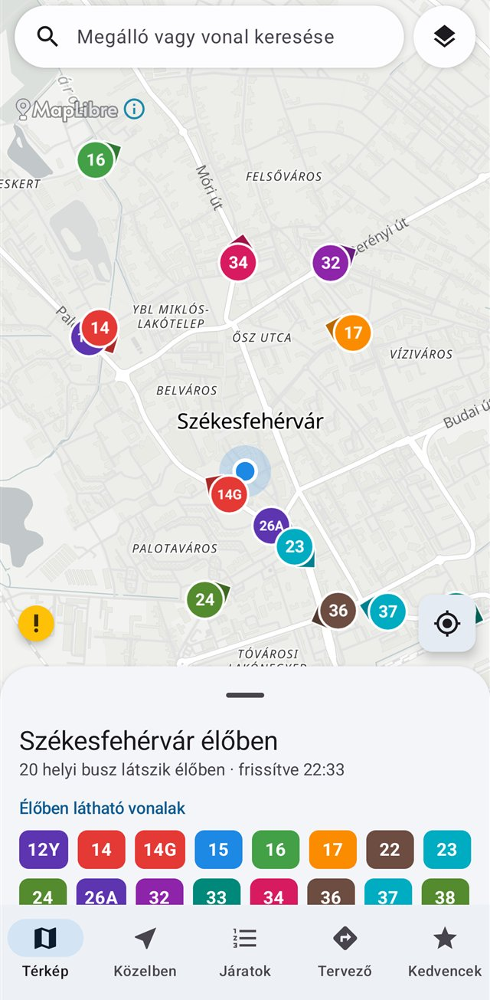

Élő térkép
Lásd, hol jár a busz
A helyi buszok élőben a térképen, vonalszámmal és menetiránnyal. A helyzetük 5 másodpercenként frissül, a buszok két frissítés között is simán haladnak.
Egy buszra koppintva látszik a késése, a rendszáma és a hátralévő megállói.